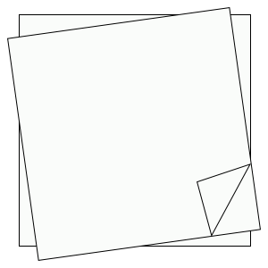
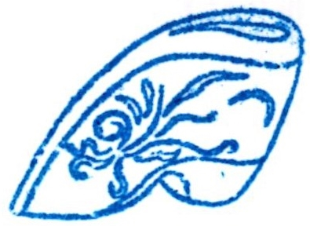
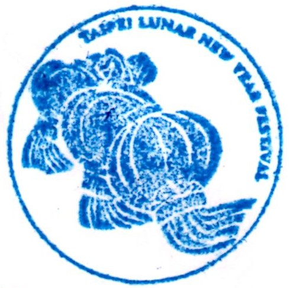
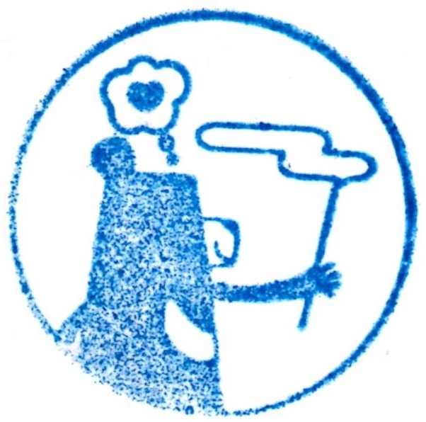

-

霞海城隍廟
日付： 2021/11/05
スタンプ注釈：
スタンプを収集ながら、運命の人をもらうように祈っている。
-



台北市で最も有名な月下老人
台湾では、恋は大学生の必修科目の一つだという通説がある。そして、二年生のクリスマスまでに、付き合う人が見つけなければ、大学を卒業するまで恋人が絶対にできないという呪いに近い都市伝説もある。台北の大学生はまだどこにいるか知らない恋人に出会って大学卒業まで恋人ができない苦境を乗り越えるため、霞海城隍廟の月下老人を絶対に参拝に行くのよ。
霞海城隍廟の月下老人は有名だけど、他の神様もおられる。このお寺の主神は城隍爺だし、参拝の順序は城隍爺がおられる左側の殿からなのだ。そして、参拝の前にお供え物の準備は重要だ。お供え物は誠意や敬意を表現するものだけではなく、お供え物のタイプは、月下老人があなたの恋を助けるかどうか関係のあるものなんだよ。（これは冗談だ）お供え物は大抵甘い物だ。例えば、チョコレートとか有名なお菓子とかはいい。お供え物を準備するには、お寺の前や近くに乾物を売っている店で販売されている月下老人のための組み合わせをお供え物にするのもいい。
もっとも重要なのは、望んでいる恋人の特徴を詳しく月下老人に教えることだ。基本的には身長や仕事や性格など、もっと詳しい特徴として、ヘアスタイルや左利きなどでも言ってみてください。だが、より多くの条件を言えば完璧な彼氏を得られるわけではない。条件が厳し過ぎると、月下老人も仕方なく手を上げるしかない。一番重要なのは、正しい交友の態度で人に付き合うことだ。